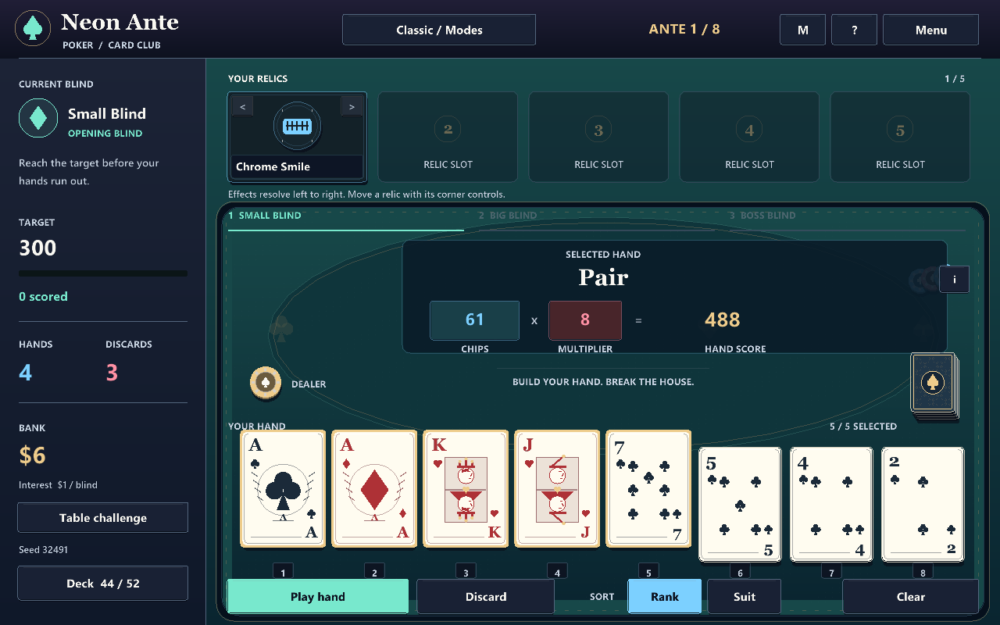

Poker hands. Unusual possibilities.
Build the hand.
Break the house.
Arrange your relics. Upgrade your deck. Find a build that can carry you through eight antes.
Runs directly in your browser. No installation needed.

A seat at the table
Make the build yours.
Choose Classic, Daily Seed, Relic Draft, or Echo Table from Modes. Each has Balanced, Planner, and Performer starting styles.
Relics resolve left to right
Use their corner controls to change the order. Adding multiplier before multiplying it can change your score. Between blinds, buy relics, constellations, and deck upgrades.
Mouse, keyboard, or touch
Click or tap cards. Keys 1–8 select; Enter plays; Backspace discards; R/S sort; H opens hand reference; Esc opens the menu. A larger screen or landscape view gives the cards more room.